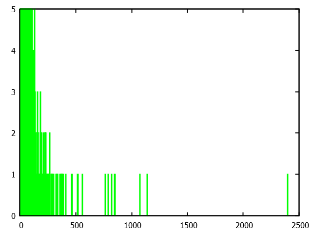

本章主要介绍NS-3当中的（伪）随机数生成器。NS-3提供了简单方便的随机数类型，可以生成各种分布的随机数。随机数生成器也属于NS-3对象框架的类，适用一切对象框架中的特性。此外，随机数可以作为属性值，并且方便地从字符串创建。为了生成互不相交的随机数序列，NS-3使用了随机数流的概念，保证不同的随机数生成器的实例当中，生成的随机数尽量不存在相互交叉的情况。
1. 伪随机数生成器概述
NS-3网络仿真依赖大量的随机数。曾有研究表明，一次相当规模的网络仿真当中，50%的CPU都贡献于生成随机数。好的随机数的生成，依赖于非常复杂的算法。这些算法所生成的随机数序列都是确定的，因此这些方法都被称为伪随机。
这些随机数生成器需要设置不同的随机数种子来保证运行的时候产生不同的随机数序列。如果两次运行设置的随机数种子相同，那么这两次运行所产生的随机数序列将是完全相同的。因此从某种意义上来说，随机数生成器的随机性是靠随机数种子来实现的。
我们可以从以下几个方面来衡量一个随机数生成器的好坏：
- 能否通过随机数种子或者其他方式，控制随机数生成序列的确定性。
- 能否获得彼此独立的随机数序列。
- 要生存多少随机数之后才能够产生重复的随机数。
下面将分别介绍这三点的概念。
1.1. 确定的随机数序列
这一点咋看起来，其实非常的矛盾，甚至有些荒谬。既然我们需要的是随机数，那为何还需要生成确定的序列？换句话说，为何我们要让每次生成的随机数序列全都确定下来？这有没有失去和技术生存的意义？
对于这一点的需求，实际上是为了我们程序调试方便。有时候我们运行仿真的时，发现程序里面有一个错误（或者结果跟我们预期的不一致）。而有时候这种错误具有随机性，在有的配置下会产生这种错误，该有的配置下不会产生这种错误。如果我们每次运行程序，随机数生成器生成的序列都不一样，那么程序将是无法调试的，我们很可能永远也找不到曾经出现过的错误，或者是要运行很多次程序，才能找到曾经出现过的错误。例如我们在运行网络仿真的时候，发现有一个节点发出的数据非常的奇怪，我们可以在运行仿真的时候，记录下这个节点的编号，试图让程序在这个节点上输出一些中间结果，用以判断程序哪里出现问题。如果我们使用的随机数序列每次都不一样，那么很可能下一次出现异常的节点和上一次的不是同一个，这就使得我们的程序调试将非常的困难。
大部分的随机数生成器要做到这一点都不难，只要两次运行的程序设置同一个随机数种子，那么两次生成的随机数序列将是完全相同的。
1.2. 独立的随机数序列
既然随机数生成的序列都是一样的，那么我们在仿真当中能不能方便地获得不同的随机数序列呢？例如，在仿真当中，不同节点发送数据的时候，发送时间间隔是一个随机数的话，如果这些随机数都生成相同的序列，那么这些节点将完全同步，即在同一时间发送数据，在同一时间停止发送。这肯定不是我们期望的结果。
当然，我们可以选择给不同节点的随机数生成器设置不同的种子。但这会带来几个问题：
- 不是所有随机数生成器都支持，给每一个实例设置不同的种子。有的随机数生成方法，只支持一个全局种子。
- 即便是我们可以给不同的随机数生成器实例设置不同的种子，我们也无法保证这两个种子生成的随机数序列完全不同，有时候，两个不同的随机数种子生成的序列可能会局部相互重复。
- 结合上一条，我们要重复一次实验，需要将所有随机数生成器的种子设置为一样的。当我们需要生成不同的结果的时候，又需要修改所有随机数生成器的种子值。
因此我们期望有一种简单的方式，来保证不同的随机数生成器能够产生相互独立的随机数序列。
1.3. 随机数的周期
大部分的随机数生成器，都只能生成预定的随机数序列。而这个序列是有一定长度的。一个随机数所能生成的，最大的随机数序列长度，被称为随机数的周期（cycle或者period）。在我们生成随机数的数量，超过随机数的周期时，这个序列将重复已经生成过的值。因此我们一般希望随机数周期足够的长。
如果能够提供一个周期足够长的随机数生成算法，那么第二个问题就将迎刃而解。例如，我们有一个周期足够长的随机数生成器，它能够生成的不重叠的随机数序列（流stream）的长度为N。那么我们可以将这个序列划分为m段，每一段称为一个子序列（或者子流substream）。因此，我们可以保证子序列和子序列之间，不会重叠，相互独立。
2. NS-3的随机数生成器
NS-3使用的随机数生成算法是加拿大蒙特利尔大学教授Pierre L’Ecuyer提出的MRG32k3a生成器（具体原理可以看这里）。它能够生成的随机数序列的周期为$3.7\times 10^{57}$。这个周期是什么概念？夸张一点，假设我们可以一纳秒生成一个随机数，那么要达到这个周期需要约$1.189\times 10^{41}$年。可以对比的是根据大爆炸理论，现在宇宙的年龄为$1.382\times 10^{10}$……到宇宙毁灭都用不完这么多随机数啊。因此，我们可以将这么长的序列分成多段，形成不同的子流。L’Ecuyer等人将随机数流划分为$1.8\times 10^{19}$个相互独立的流，而每个流又划分为$2.3\times 10^{15}$，每个子流的长度为$7.6\times 10^{22}$。需要$2.443\times 10^{6}$年，即约20万年可以用完这个随机数子流。
因此，对于上面提到的三个衡量准则，该算法：
- 可以选择不同的流来获得随机性，同时，可以固定一个流来获得确定性。
- 对于一个特定的流，不同的随机数生成器实例可以选择不同的子流来保证相互的独立性。
- 随机数生成器的周期长到可以为所欲为。
如果你足够细心的话可能还记得我们在配置路径一章提到过NS-3提供了5个全局属性。其中和随机数生成的属性一个有两个：RngSeed和RngRun。其中RngSeed即表示随机数种子。随机数的种子设置不同的值的话，可以保证随机数生成不同的序列，这可以用以保证随机性。但如果需要重复相同的程序结果，可以保持随机数种子不变，以保证确定性。除此之外，NS-3还提供了另外一个属性RngRun，通过修改这个参数，也可以改变随机数序列的随机性。那么这两个属性究竟有什么联系和区别呢？
使用RngSeed和RunRun的一种典型的情况是对某个特定的仿真过程进行多次独立试验。以便根据大量的独立运行结果来计算统计信息。用户可以改变全局种子并再次运行该模拟过程，也可以推进随机数的流的状态,这被称为增加运行次数（run number）。
那么设置新的种子和推进子流的状态,哪一个更好?当改变随机数种子的时候，我们无法保证流产生的两个随机种子不是互相重叠的，即两个不同的种子生成的随机数之间可能有一部分是相互重叠的。保证两个流不互相重叠的唯一办法是使用由生成算法实现提供的子流功能。使用子流功能来实现同一个模拟过程的多个彼此独立的运行。从统计意义上来说，设置独立的重复实验更严格的方法应该是使用固定的种子并改变运行次数（RngRun）。使用子流时，独立的重复实验的最大值为$2.3×10^{15}$（因为每个流只有这么多个子流）。
总结：不同的随机数生成器实例对应不同的流，因此，各个生成器实例之间的随机数序列是相互独立的。不同的运行次数之间，某个生成器实例又使用不同的子流，因此，可以保证每个生成器实例在每次运行之间生成的随机数序列是独立的。因此更加推荐在重复的多次仿真当中使用运行次数的推进。
除了设置全局属性之外，NS-3提供了另外一种方法来设置随机数的种子和运行次数：
1 | RngSeedManager::SetSeed (3); // Changes seed from default of 1 to 3 |
这和设置全局属性的效果是一样的。当然，设置随机数种子和运行次数需要在程序刚开始创建任何随机变量之前进行。
当然这种方式每次修改种子和运行次数之后都会引起程序重新编译。由于RngSeed和RngRun都是全局属性，因此，我们也可以使用命令行一章介绍的方法来通过命令行参数修改他们的值：
1 | $ ./waf --command-template="%s --RngSeed=3 --RngRun=7" --run program-name |
这种方式无论多少次修改随机数种子或者运行次数都不会引起程序重新编译。
2.1. RandomVariableStream
NS-3当中所有的随机数生成器，都继承自一个基类RandomVariableStream。这个类主要实现了上面提到的MRG32k3a模型。除此之外，它还包含一个非常重要的属性Stream：
1 | static TypeId tid = TypeId ("ns3::RandomVariableStream") |
Stream属性设置不同的值保证了不同的随机数生成器实例之间生成的随机数序列相互独立。该属性的值默认为-1，表示由系统自动分配。每次生成一个随机数实例的时候，其属性值自动加1。由上面的介绍可知，该随机数生成模型预留的流的数量非常多，因此在NS-3当中，将所有的流分为两段。流编号小于等于$2^{63}-1$的流是交给系统自动分配用的；而流编号在$2^{63}$到$2^{64}-1$的流交给用户自主分配。
用户自主分配留编号和系统自动分配流编号，最大的区别就是生成随机数的确定性。因为系统自动分配是按随机数生成的先后顺序自动加1，如果改变了随机数生成器的创建顺序，那么有可能造成，随机数生生成器分配的流编号和上次分配的有不一样，不利于代码调试，但是使用方便。而自动分配可以确保，每次分配的流编号是一样的，但是分配起来较为复杂。具体使用哪种看要需求而定。
其另外一个属性Antithetic，在不同的子类当中的含义不同。当这个属性设置为false（默认）的时候，它将按照正常的分布来生成随机数。而当它被设置为true的时候，会生成特殊的随机数。这个需要看具体随机分布对其的定义。
除了通用的属性之外，RandomVariableStream类还定义了两个虚方法：
1 | class RandomVariableStream : public Object |
这两个方法都有子类来实现，一个用于生成浮点数，另一个用于生成整数，具体使用哪一个，要视随机数生成器的类型而定。一般子类还会提供额外的方法。
下面介绍一些RandomVariableStream常用的子类来实现各种不同的随机数分布。
2.2. UniformRandomVariable
UniformRandomVariable主要用于生成均匀分布的随机数。均匀分布是所有随机分部当中最简单的一种。
UniformRandomVariable类当中定义了两个属性Min和Max:
1 | TypeId |
这两个值限制了生成的随机数的范围：
- 对于整型数，其取值范围是：$[Min, Max]$
- 对于浮点数，其取值范围是：$[Min, Max)$
其数学期望为：$E(X)=(Min+Max)/2$。方差为：$D(x)=(b-a)^{2}/12$。
下面通过一个简单的例子来解释，均匀分布随机变量的使用方法：
1 |
|
程序当创建了一个均匀分布的随机变量生成器，通过属性设定其最小值为0，最大值为10。然后生成了10个随机数。运行程序，得到如下结果：
1 | Waf: Entering directory `/home/rainsia/Applications/ns-allinone-3.29/ns-3.29/build' |
可见最终生成的随机数当中，没有一个超过10的。
我们也可以生成整数版本的均匀分布的随机数：
1 |
|
运行程序，得到如下结果:
1 | Waf: Entering directory `/home/rainsia/Applications/ns-allinone-3.29/ns-3.29/build' |
可以看到在整数模式下，最终取值可以取得最大值10。
最后我们生成10000个浮点型随机数，然后使用gnuplot显示其直方图（关于gnuplot的使用请参见马欢的博客）：
1 |
|
1 | set term pngcairo lw 2 |
当然生成的数字越多，越符合大数定理，越能展示其分布。最终直方图如下：
2.3. ConstantRandomVariable
ConstantRandomVariable称为常数分布，严格说起来并不算是随机变量，只是为了能够在使用随机变量作为类型的地方能够使用常数而创造的。它有一个属性Constant，默认值为0.0。不管生成多少随机变量，生成器始终返回Constant值。
因此，分布的均值为Constant，而方差为0。
下面通过一个简单的例子来演示：
1 |
|
运行程序，得到如下结果:
1 | Waf: Entering directory `/home/rainsia/Applications/ns-allinone-3.29/ns-3.29/build' |
如果我们获取整数，那么程序将对浮点数进行截断：
1 |
|
运行程序，得到如下结果:
1 | Waf: Entering directory `/home/rainsia/Applications/ns-allinone-3.29/ns-3.29/build' |
可见程序就是对设置的Constant属性进行了简单粗暴的截断而已。最后我们同样产生1万个随机数，然后展示其直方图:
2.4. SequentialRandomVariable
SequentialRandomVariable生成固定模式的数列，没有合适的官方命名，我们姑且称为数列分布。它一共提供4个属性：
- Increment：数列每次递增量，这个可以是任意其他随机变量，默认值为常数随机变量。
- Consecutive：数字重复多少遍才递增，整数，默认值为1。
- Min：数列初始值，浮点数，默认值为0。
- Max：数列最大值（不含），浮点数，默认值为0。
当Increment取真正的随机变量的时候，这是一个随机数生成器。当Increment取常数分布的时候，这就是一个固定模式的数列。由于其不确定性，无法直接推导其均值和方差。
下面通过例子来进行演示：
1 |
|
运行程序，得到如下结果：
1 | Waf: Entering directory `/home/rainsia/Applications/ns-allinone-3.29/ns-3.29/build' |
程序中我们可以观察到，当生成的随机数的值大于设置的最大值的时候，生成器会将这个值进行转换，其具体算法是：Min + (current - Max)。例如，我们生成了随机变量10，其增加4之后得到14，然而最大值只有13，因此程序进行了变换：2 + (14 - 13) = 3。当生成了随机变量11之后，增加4得到15，因此程序再次进行变换：2 + (15 - 13) = 4。
我们生成10万个随机数之后绘制了其直方图：
2.5. NormalRandomVariable
NormalRandomVariable被称为正态（高斯）分布，是一种使用非常广泛的分布类型。
它有三个属性：
- 均值Mean，浮点型，默认值为0。
- 方差Variance，浮点型，默认值为1。
- 上限Bound，浮点型，默认值为1e+307。
正态分布的取值范围是从负无穷到正无穷，程序中可以通过一个Bound属性来控制，生成随机变量的大概范围。其均值和方差均已通过属性进行设置。如果属性的默认值不进行修改，将得到标准正态分布。
下面通过一个简单的例子来演示正态分布随机变量的使用：
1 |
|
运行程序，得到如下结果：
1 | Waf: Entering directory `/home/rainsia/Applications/ns-allinone-3.29/ns-3.29/build' |
当然正态分布如果是只是生成一些随机数，是看不出任何效果的，因此，我们还是生成10万个随机数，然后展示其直方图：
从图中可以看出，其均值确实在10附近。
2.6. ExponentialRandomVariable
ExponentialRandomVariable被称为指数分布。这是系统分析当中最常使用的分布，主要优点在于其无记性特性。下次事件发生的概率和这一次的事件发生无关，比较有利于数学推导。因此指数分布广泛用于仿真领域。例如，可以将数据包的发送时间间隔设置为指数分布，那么下一次什么时候发送数据包和当前什么时候发送数据包之间没有关系。
指数分布的取值范围是：$[0, +\infty)$。它有两个属性：
- Mean：均值，浮点数，默认值为1。
- Bound：生成随机数的上限，浮点数，默认值为0，表示不限制。
当设置Bound属性为非零值之后，其概率密度函数将产生一些修正，以保证其概率和总能累计为1。
下面使用一个简单的例子来演示指数分布随机变量的使用：
1 |
|
运行程序，得到如下结果:
1 | Waf: Entering directory `/home/rainsia/Applications/ns-allinone-3.29/ns-3.29/build' |
同样的，我们可以生成器10万个随机数，然后展示其直方图：
2.7. ParetoRandomVariable
ParetoRandomVariable被称为帕累托分布，是一种重尾分布（heavy-tailed distribution）。所谓重尾分布（Heavy-tailed distribution）是一种概率分布模型，它的尾部比指数分布还要厚。在许多情况下，右边尾部的部分比较受到重视，但左边尾部比较厚，或是两边尾部都比较厚的状况，也被认为是一种重尾分布。
重尾分布意味着可以更大的概率获得很大的值. 因此与弱随机性相反，重尾分布一般表示病态，增加的各种结果被确定为具有重尾分布，包括收入分布、财务报告、保险支出、网页的参考链接等。重尾分布的一个特殊的子集是幂律，其意味着概率密度函数是一个幂。 一个技术难题是，不是所有的矩存在于这些分布，这一般意味着它们使用分位数和其它顺序统计学。这也就是说，中心极限定理不再成立。但是对于诸如均值，即稳定分布的线性组合，我们获得一个新的标准极限分布。
设$X$是一个随机变量，$F(X)=Pr\{X<x\}$为它的分布函数，如果当$x\to \infty$时$1-F(X)\sim 1/x^{a}$其中$x>a$，称X的分布为重尾分布，又称幂律分布。
一般来说，服从重尾分布的随机变量X具有较大甚至是无穷大的方差，而且当$a\le 1$时，X的均值也是无穷的。随机变量X会以不可忽略的概率取到非常大的数值，即：大量的小抽样取值和少量的大抽样取值并存。
在1994年，随着网络研究人员Leland的一篇文章“On the self-similar nature of Ethernet traffic”的发表，网络研究界平地一声雷，引起了轩然大波。传统的基于泊松分布的网络分析模型不能准确描述真实网络流量的特性。“网络流量自相似”、“网络流量长相关”等说法逐渐普及。由于流量模型是网络性能分析的基础，而在自相似流量下，网络的特性和传统短相关流量下，有非常大的不同。一时间，各种自相似流量模型兴起。其中一种就是基于重尾分布建立的。重尾分布有很多种。Pareto是比较容易生成的其中一种。
帕累托分布一共有4个属性：
- Mean，均值，浮点数，默认值为1。
- Scale，帕累托分布的位置参数，一般记为$\beta$，浮点数，默认值为1。
- Shape，帕累托分布的形状参数，一般记为$\alpha$，浮点数，默认值为2。
- Bound，上限，用于控制帕累托随机变量生成得值的上限，浮点数，默认值为0，表示不限制。
当Shape属性值$\alpha \le 1$时，帕累托分布的随机变量具有无穷的均值。当$\alpha\le 2$时，帕累托分布的随机变量具有无穷的方差。当$\alpha \in (1,2) $时，具有均值，但是方差为无穷。当$\alpha > 2$时，均值和方差均存在，且有限，计算公式为：$E(X) = \frac{Scale \times Shape}{Shape - 1}$。当然，如果Bound属性设置为非零值，那么产生的随机数的均值会比计算值小一些。
我们用下面的程序来演示帕累托分布的使用：
1 |
|
运行程序，得到如下结果：
1 | Waf: Entering directory `/home/rainsia/Applications/ns-allinone-3.29/ns-3.29/build' |
同样，我们还是生成10万个随机数，然后绘制其直方图:

可以看到，帕累托分布的随机变量大部分值的出现都是在较小的数值区域，但偶尔会产生一些非常大的值。如果Shape参数取值，越小，这样的值就会越多。在直方图上或者在概率密度函数上看来，就相当于其尾巴延长了，这就是重尾分布或者长尾分布名称的由来。
除此之外，NS-3还实现了如下的随机变量分布：
- class WeibullRandomVariable
- class NormalRandomVariable
- class LogNormalRandomVariable
- class GammaRandomVariable
- class ErlangRandomVariable
- class TriangularRandomVariable
- class ZipfRandomVariable
- class ZetaRandomVariable
- class DeterministicRandomVariable
- class EmpiricalRandomVariable
3. 自定义随机数生成器
NS-3当中并没有默认提供几何分布的随机变量。下面我们以集合分布的随机变量为例，来介绍如何自定义一种随机变量类型。
要创建随机变量生成器，第一步需要我们明白随机变量的类型，是连续型还是离散型？连续型和离散型随机变量的生成方法是不同的。
连续型随机变量大多都可以通过求反函数的方法来实现，这里就不再赘述，感兴趣的读者可以参考博客。
对于离散型的随机变量，可以使用通用方法生成随机变量，我们只需要知道其分布函数即可。例如，我们需要生成几何分布的随机变量，其分布函数为：$Pr(k) = (1-p)^(k-1)p$，即随机变量的值是k的概率。那么每个取值都对应一个概率。因此，我们可以计算一张表，例如p=0.5的时候，有：
| k | 1 | 2 | 3 | …… |
|---|---|---|---|---|
| pr | 0.5 | 0.25 | 0.125 | …… |
| ∑ | 0.5 | 0.75 | 0.875 | …… |
因此，我们只需要生成一个(0,1]分布的随机变量值，然后写一个循环，查找这个值究竟在哪个范围内即可确定对应的值是多少。然而这种方法太慢了，当变量的取值范围非常大的时候，需要循环很多次才能找到正确的区间。
不同的离散型随机变量生成方法大多都有不同的优化方法。例如，我们要生成几何分布的随机变量。首先，我们需要先明白几何分布的随机变量的意义才能更好地进行优化。这里，几何分布表示反复进行贝努利实验，第k次才实验成功（前k-1次都失败）的概率。
什么是贝努利实验呢？其实可以简单的理解，这个实验只有两种结果，并且其中一种的概率用p来表示。例如，抛硬币就是一个典型的贝努利实验，只有正面和反面两种结果，我们可以将结果为正面的概论定为p，那么结果为背面的概率自然就是1-p。
因此几何分布中，第k次才成功的概率为：$P(k)=(1-p)^{k-1}p$。其中$(1-p)^{k-1}$表示前k-1次均失败的概率，而p表示第k次成功的概率。
$\sum_{i=1}^{j-1}P(i)$表示第1次成功的概率一直累加到第j-1次成功的概率，其中$j\ge 1$。因此有$\sum_{i=1}^{j-1}P(i) = 1 - \sum_{i=j}^{+\infty}P(i)$。而$\sum_{i=j}^{+\infty}P(i)$表示前$j-1$次都未成功的概率，根据贝努利实验的原理可知$\sum_{i=j}^{+\infty}P(i)=(1-p)^{j-1}$。因此最终有$\sum_{i=1}^{j-1}P(i)=1-(1-p)^{j-1}$。这就将概率的累加用公式表示出来了，因此，我们编程的时候就无需循环去累加概率了。和通用方法类似的，我们只需要去生成一个(0,1]分布的随机变量u满足如下公式：
$$1-(1-p)^{j-1}\le u < 1-(1-p)^{j}$$
那么对应的j就是我们要求的值。简化后得到：
$$(1-p)^{j}< 1- u \le (1-p)^{j-1}$$，即
$$X=\min\{j:(1-p)^{j}<(1-u)\}=\min\{j:ln(1-p)^{j}<ln(1-u)\}=\min\{j:jln(1-p)<ln(1-u)\}$$
这里需要注意的是，由于(1-p)一定小于1，则ln(1-p)一个是个负数。因此有：
$$X=\min\{j:j>\frac{ln(1-u)}{ln(1-p)}\}=\lfloor\frac{ln(1-u)}{ln(1-p)}\rfloor+1$$
由于u是均匀分布的随机变量，那么生成u和生成1-u的概率是一样的，因此，有
$$X=\lfloor\frac{ln(u)}{ln(1-p)}\rfloor+1$$。
这里需要注意的是p不能等于1，程序当中需要特殊处理一下。不过从意义上来理解，如果p等于1了，那说明成功的概率为1，肯定实验第一次就成功了呀。所以……你懂的
这样生成的几何分布的均值为$E(X)=1/p$，方差为$D(X) = (1-p)/p^2$。
有了以上的公式，我们就可以生成几何分布的随机变量了。只要写一个类继承RandomVairableStream，然后按公式生成随机数即可。程序如下：
1 |
|
运行程序，得到如下结果：
1 | Waf: Entering directory `/home/rainsia/Applications/ns-allinone-3.29/ns-3.29/build' |
同样的，我们也生成10万个符合几何分布的随机数，然后画出其直方图：
从图中可以看到，大部分时候，实验都是一两次就成功了。因为默认的成功概率p为0.5。假如我们认为成功是指抛硬币抛到正面，那么，这就解释了为什么我们抛硬币可以在短短几次之内就能抛到正面。
4. 随机数作为属性的值
如果需要将随机数作为属性类型，那么可以将对应的底层变量声明为ns3::Ptr< ns3::RandomVariableStream>，这是一切随机数生成器的父类，而属性值类型设置为PointerValue。进行属性设置的时候，可以直接使用PointerValue(x)类型，例如我们前面序列随机变量的例子：
1 |
|
其中的Increment属性就是一个另一个随机变量。当然，我们也可以通过StringValue来构建随机变量，程序会更加简洁（具体如何从字符串构建对象并设置其属性，请参见属性框架一章）。例如，我们可以如下简化程序：
1 |
|